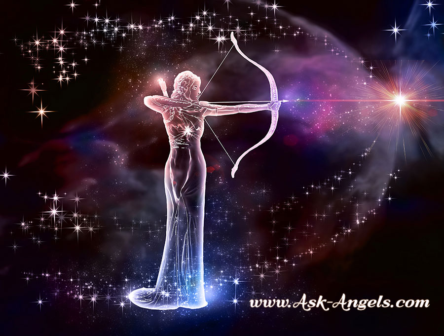

2021. gada horoskops katrai zodiaka zīmei - 1188 padomi
 1188 LV LV EN RU LV LV EN RU Uzņēmumi Satiksme Laika ziņas Vārda dienas 1188 kuponi Valūtu kursi Darba piedāvājumi TV programma Kino Horoskopi 1188 Internets ar TV 0 °C Trešdiena, 17. marts Gerda, Gertrūde, Ģertrūde 1188 padomi Atpūta 2021. gada horoskops katrai zodiaka zīmei Astroloģija/Ezotērika
2021. gada horoskops katrai zodiaka zīmei
Trešdiena, 23. decembris, 20202021. gada horoskops (Image by Gerd Altmann from Pixabay)
2021. gada horoskops Aunam
Darba šajā gadā netrūks, tomēr ne viss ritēs tika gludi un ātri, kā tev gribētos. Brīžiem apstākļi var traucēt izaugsmei, reizēm tavs straujais raksturs. Svarīgi veidot labas attiecības ar kolēģiem, sadarbības partneriem, piesaistīt saviem projektiem jaunus investorus. Iespējams, ka profesionālajā plānā gada otrā puse būs veiksmīgāka nekā sākums. Finansiālā jomā labāk veiksies tie, kas darbojas vadītāja amatā vai individuālajā biznesā. Kas attiecas uz privāto dzīvi, tad precētajiem auna zīmes pārstāvjiem jārēķinās, ka daudz uzmanības būs jāvelta tuvinieku problēmu risināšanai, atvasīšu skolas gaitām un tamlīdzīgiem pasākumiem. Sirdī brīvajiem klāsies nedaudz vieglāk, tomēr nav izslēgts, ka jaunizveidotie sakari nebūs ilglaicīgi, vairāk līdzināsies flirtam. Veselības ziņā viss būs kārtībā, ja pievērsīsi uzmanību regulārām fiziskām aktivitātēm svaigā gaisā.
2021. gada horoskops Vērsim
Šajā gadā priekšplānā izvirzīsies partnerattiecību tēma. Kāds pārtrauks ilgstošu sakaru, lai uz laiku pabūtu viens un saprastu, ko patiesi vēlas, cits tikai uzsāks pirmos soļus mīlas sfērā. Tā vai citādi, galvenais ir nepārsteigties ar secinājumiem, sevišķi gada sākumā. Kardinālas izmaiņas nekad nav vieglas, tāpēc nebrīnies, ka privātā jomā notiekošais ietekmēs darba spējas. Profesionāli veiksies tiem, kas darbojas sev atbilstošā vidē, ir pietiekami brīvi un neatkarīgi. Tev pastāv visas iespējas kļūt par autoritāti, iekarot publikas uzmanību, izcelties kolēģu vidū! Darbs komandā un pienākumu dalīšana nav nekas nepareizs, tomēr izskatās, ka šogad tev vairāk būs jāpaļaujas uz saviem spēkiem. Tai pat laikā, tas nenozīmē, ka nevajag veidot jaunus kontaktus. Tiesa, ne visi iepazītie cilvēki sākotnēji tevi uzrunās, tomēr tavas domas par viņiem var mainīties. Naudu tērē samērīgi, tomēr kādu ceļojumu noteikti vari atļauties!
2021. gada horoskops Dvīnim
Gada sākumā satrauksies par finansiālo stāvokli, kas patiešām nebūs pārāk stabils. Iespējams, nebūsi ticis skaidrībā, par ko tieši vēlies kļūt, kur strādāt, jo īpaši tas attieksies uz gados jaunākajiem zīmes pārstāvjiem. Mazāk klausies apkārtējo viedokļos, mācies pieņemt lēmumus pats un nešūpojies kā niedre vējā! Kopumā gads gan materiālajā plānā, gan darba lietās būs samērā veiksmīgs, pie nosacījuma, ka pievērsīsies sevi interesējošām nodarbēm. Iespējamas jaunas iepazīšanās kā darba, tā arī privātā kontekstā. Sirdī brīvie dvīņi būs gatavi jauniem piedzīvojumiem, labprāt meklēs domu un dvēseļu biedrus. Sieviešu kārtas pārstāves lielu uzmanību pievērsīs savam izskatam, varbūt pilnībā mainot imidžu. Gada ietvaros daudz kas būs atkarīgs no tevis, tai skaitā tavas pašsajūtas un garastāvokļa.
2021. gada horoskops Vēzim
Darba lietās viss būs atkarīgs no tā, vai esi padotais, vai tev pieder savs privātais bizness. Abos gadījumos varbūt nebūs viegli izdzīvot finansiālā plānā, ņemot vērā situāciju valstī, tomēr kopumā lielāki vinnētāji būs tie, kas nav ne no viena atkarīgi. Svarīgi nebaidīties, neturēties pie konservatīvām vērtībām, tad nav izslēgtas pat iespējas paplašināt savu biznesu. Veiksme smaida tiem, kas saistīti ar lauksaimniecību, pedagoģiju, ēdināšanas sistēmu, viesu namiem, tomēr viss būs jādara citādāk nekā līdz šim. Iespējams, profesionālās un mīlas lietas būs grūti sabalansēt, un tu jutīsies ģimenei parādā darbā pavadītās stundas. Nav īstais laiks bērna plānošanai, tas attiecības var tikai sarežģīt. Kāds vēža zīmes pārstāvis nolems uz laiku “paņemt pārtraukumu” un padzīvot viens. Nesatraucies par veselību, tiec galā ar savām vajadzībām!
2021. gada horoskops Lauvai
Pēc austrumu kalendāra šis būs Vērša gads, kas lauvai nozīmēs, ka darba netrūks. Tomēr tu neatlaidīgi virzīsies uz mērķi, un to arī sasniegsi. Šķēršļu pārvarēšana savā ziņā būs kā papildus izaicinājums, ar ko apkārtējiem pierādīsi uz ko patiesībā esi spējīgs. Padotajiem zīmes pārstāvjiem pastāv iespējas gūt ievērību priekšniecības acīs, kas pavērs iespējas pakāpties pa karjeras kāpnēm. Savukārt, tiem kas darbojas privātajā biznesā veiksmīgāka gada nogale. Patiks baudīt dzīvi, tikai reizēm šausi pār strīpu, sevišķi jau tavas mīlas attiecības būs zem katras kritikas. Ja esi precēts cilvēks, nesāc mīlas sakaru darba vietā, lai negrautu savu autoritāti. Tie lauvas zīmes pārstāvji, kas nesen uzsākuši kopdzīvi, varbūt plānos kāzas, ģimenes pieaugumu. Atvaļinājumā labāk doties augustā.
2021. gada horoskops Jaunavai
Tev var nākties mainīt ierasto kārtību, tā teikt “izkāpt no komforta zonas”. Varbūt jau labu laiku pretojies tev vēlamām pārmaiņām, bet šoreiz variantu nebūs! Kas attiecas uz darbu, finansiālo dzīves pusi, tad nāksies vien pieņemt kardinālus lēmumus. Konkurenti var tēmēt uz tavu vietu, arī pats jau būsi nedaudz izsmēlis rezerves, un tieši tāpēc ir vērts pamēģināt kaut ko patiešām jaunu! Vēlams paplašināt kontaktu loku, iziet plašākās masās, parādīt citiem savus dotumus, talantus, lai par to uzzina pasaulē. Kas attiecas uz mīlas sfēru, tad arī šajā jomā nāksies pieņemt svarīgus lēmumus. Svarīgi, lai esošās attiecības tev netraucētu pilnveidoties, un tu nesāktu uzupurēties otra cilvēka labā. Ja tev ir bērni, noteikti velti viņiem laiku, palīdzi materiāli, tomēr nepārforsē!
2021. gada horoskops Svariem
Mīlestība, erotika, personīgā dzīve – tās būs gada galvenās tēmas. Tev patiks labi izskatīties, tērēsi tam ne mazums naudas un mērķis attaisnos līdzekļus. Iepazīšanās tev garantētas, arī esošajam partnerim patiksi. Pastāv iespējas iepazīt īsto otro pusīti. Daudz vērības veltīsi mājas interjera uzlabošanai, un skaidrs, ka viss iepriekšminētais prasīs no tevis ne mazums līdzekļu. Runājot par naudu, nopelnīs tie, kas darbojas radošajos lauciņos, tikai būs jāatrod jauna pieeja sava projekta, produkta utt. nopārdošanai. Pieslēdz interneta iespējas! Radi, draugi un kolēģi būs izpalīdzīgi, sniegs tev neskaitāmus padomus. Jebkurus lēmumus šogad labāk pieņemt vienpersoniski, kaut arī tev patīk uzklausīt citu padomus. Mācies būt patstāvīgs! Cita lieta, ka vēlama pieredzes bagātināšana kādos tavai profesijai un interesēm atbilstošos kursos.
2021. gada horoskops Skorpionam
Kopumā gads karjeras ziņā samērā veiksmīgs, ja ievērosi dažus priekšnosacījumus. Tātad, ja esi padotā lomā, noteikti nesāc augstākstāvošām personām pierādīt savu taisnību. Savukārt, ja pats esi boss, nesāc apspiest padotos, vairāk ieklausies viņu viedokļos. Svarīgas būs arī tā saucamās “iestrādnes”, tāpēc, ja esi licis labus pamatus savai un firmas attīstībai, tas atmaksāsies ar uzviju. Tāpat pastāv iespējas mainīt darba vietu, ja saproti, ka ilgstoši netiec novērtēts vai finansiāli viss neatmaksājas. Gados jaunākie skorpioni lielu vērību pievērsīs izglītības jautājumiem, tomēr te svarīgi nepārsteigties. Mācies to, kas sirdij tuvs, nevis, ko no tevis gaida apkārtējie vai kas finansiāli izdevīgs. Mīlas sfērā daudz kas var tapt skaidrs, senas attiecības var arī izjukt.
2021. gada horoskops Strēlniekam
Iespējams, gads sāksies uz straujas nots, vai tu pats visu gribēsi panākt tūlīt un tepat. Nesteidzies notikumiem pa priekšu! Kā darba, tā privātajā sfērā pārsteidzība un emocijas par labu nenāks. Ja iepriekšējā periodā esi gana ražīgi strādājis, tagad varēsi plūkt panākumu augļus, bet slinkotājus gaida žagari. Ne visas ambīcijas profesionālajā plāna izdosies realizēt, bet te vainīgs nebūs liktenis, bet tavs raksturs! Vēlams pēc iespējas vairāk pievērsties ezoteriskām tēmām, kas palīdzēs rast iekšēju harmoniju un varbūt pat savu īsto dzīves ceļu. No tevis varētu sanākt labs garīgais skolotājs, padomdevējs! Mīlas frontē viss atkarīgs no tā, vai esi brīvs vai precēts, un ko vēlies darīt tālāk. Iespējams gan ģimenes pieaugums, gan atsvešināšanās attiecībās. Ja būsi harmonijā ar sevi, veselības problēmas tevi neskars.
2021. gada horoskops Mežāzim
Divas galvenās gada tendences – darbs un mīlestība. Diemžēl tev var būt pagrūti izšķirties starp to, kam pievērst galveno vērību. Biznesā var atgriezties cilvēki no pagātnes, varbūt ne katra tikšanās būs patīkama. Zvaigznes iesaka neturēt ļaunu prātu uz kādu sadarbības partneri, bet no sirds izrunāties. Tas pats attiecas arī uz privāto dzīvi, varbūt kāds sens paziņa, draugs vai pat bijušais iemīļotais var atkal uznākt uz skatuves. Vari pievērsties mājas labiekārtošanai, jaunas sadzīves tehnikas iegādei, bērnu skološanai, tam arī veltīt ienākošos līdzekļus. Pašsajūtu ietekmēs ne tik daudz ar tevi notiekošais, kā sabiedrības spiediens, kam pakļausies, uztraucoties par savu vai tuvinieku veselības stāvokli.
2021. gada horoskops Ūdensvīram
Pārmaiņu gads, bet tevi jau tas sevišķi nesatrauks, jo pats esi gana liels reformators! Vēlama patiesi radikāla rīcība visās dzīves jomās, jo šobrīd planētu stāvoklis tam atbilstošs. Darba sfērās ieteicams nākt klajā ar jaunām idejām, piesaki savu patentu, ja esi ko izgudrojis. Iespējamas saķeršanās ar valsts varas instancēm, tomēr nebīsties, taisnība ir tavā pusē. Vari paplašināt biznesu, nauda vēlāk tecēs kā pa renīti! Ir tikai viens nosacījums – tev jādarbojas jomā, kas patiesi interesē, saista, tad arī panākumi būs garantēti. Fortūna ir ar tevi, jo arī mīlas sfērā gaidāmi panākumi! Galvenais, esi aktīvs, iesaisties dažādās interešu grupās, kur arī ir tava īstā iepazīšanās vide - video/foto māksla, astroloģijas/psiholoģijas nodarbības. Precētajiem zīmes pārstāvjiem pacelsies jautājums par bērna plānošanu.
2021. gada horoskops Zivīm
Iespējamas pārmaiņas profesionālajā sfērā, tev būs svarīgi izšķirties, kurš piedāvājums tev būtisks, jo tie var būt vairāki. Noteikti paļaujies uz sirds balsi nevis aprēķinu, tad arī naudiņas būs vairāk! Pat, ja viss neizdosies tieši šajā gadā, ar savu darbošanos tu ieliksi labu augsni nākamajiem periodiem. Kāds var nolemt uzsākt savu biznesu, cits paplašināt jau esošo, tomēr baiļu un nedrošības sajūta tam var patraucēt. Svarīgs būs tuvu cilvēku atbalsts, pie kam tie var būt ne tikai ģimenes locekļi. Pēdējā laikā tu pārāk noslēdzies sevī, tāpēc līdzcilvēkiem ir grūti tevi izprast, palīdzēt. Iespējams, satiksi kādu cilvēku no pagātnes un jūsu attiecības uzliesmos ar jaunu kaisli. Mīlas jomā tev būs vieglāk uzticēties personai, ko labi pazīsti, kamēr jaunas attiecības veidosies sarežģīti.
Lasi arī šos rakstus:
2021. gada naudas horoskops Auniem, Vēršiem un Dvīņiem;
2021. gada mīlestības horoskops Mežāžiem, Ūdensvīriem un Zivīm;
Kuras ir savstarpēji visnesaderīgākās horoskopa zīmes ?
Horoskops bērnam : Uzzini, kāds ir mazā ķipara raksturs pēc zodiaka zīmes;
Uzzini savu Ziedu horoskopu ! 1.daļa (no 01.01. līdz 01.07. dzimušie).
Laimīgās un nelaimīgās krāsas katrai horoskopa zīmei 2021.gadā
Horoskops
Līdzīgi padomi
Horoskops un laulība: kas ir svarīgi katrai horoskopa zīmei?
Lūk, ko saka horoskops katrai zodiaka zīmei par laulību. Uzzini, kad katram ir vispareizākais laiks apprecēties, kāda ir katra horoskopa zīme kā laulātais un kāda otra puse katrai horoskopa zīmei...
Nedēļas horoskops 15. - 21.martam
Marts jau pusē un horoskops ik nedēļu sola jaunus piedzīvojumus un raibāku ikdienu - gan pārnestā, gan burtiskā nozīmē. Ko sola mums zvaigsnes nedēļā, kad skolēniem ir brīvlaiks, valdība lemj...
Trauki plīst uz laimi un citi ticējumi par traukiem
Trauki – visikdienišķākais priekšmets katrā mājā. Kādi ticējumi ar tiem saistīti? Mūsu senčiem ir bijuši gan par trauku mazgāšanu, gan taisīšanu un arī par to plīšanu. Ko ir svarīgi ievērot,...
Ielādējam...
Par mums Reklāma Biznesa klientiem Tarifi Privātuma politika Sīkdatņu lietošanas noteikumi Komentāru pievienošana Uzņēmumi Autobusi, vilcieni, starptautiskie pārvadājumi Autobusu biļetes Vilcienu biļetes Kinoteātros TV programma Līguma noteikumi Piesaki savu uzņēmumuJa tavs uzņēmums nav mūsu datubāzē, aizpildi vienkāršu formu.
1188 datu bāzes, tās daļas vai datu bāzē iekļautās informācijas, vai informācijas daļas pavairošana vai izplatīšana jebkādā formā stingri aizliegta. Tāpat arī ir aizliegta lejupielāde automātiskā režīmā. Jebkura 1188 web lapā publicētā materiāla pārpublicēšana ir kategoriski aizliegta bez 1188 web lapas redakcijas atļaujas.
Portāla palīdzības dienests: e-pasts - info@1188.lv
Izstrādāts SIA Helio Media
1188.lv atvērsies pēc